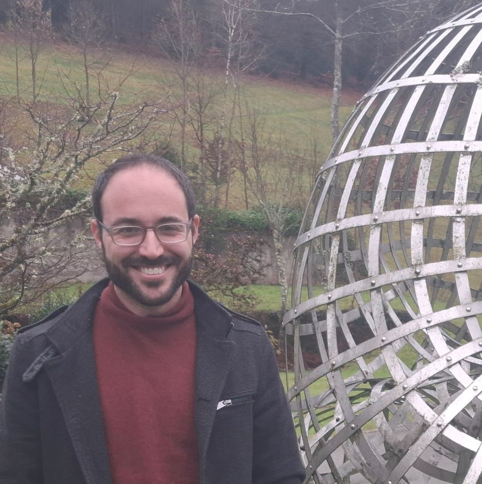

Rotem Assouline
Mathematician
I am an FSMP postdoctoral fellow at the
Equipe Analyse Fonctionnelle, Institut de Mathématiques de Jussieu - Paris Rive Gauche
. Before that, I was a graduate student at the
Weizmann Institute of Science
under the supervision of prof.
Bo'az Klartag
.
My research interests lie at the intersection of differential geometry, optimal transport theory and convex geometry. Currently, I am working on displacement convexity in optimal transport with general Lagrangian costs.

Curriculum Vitae
Publications
Curvature-Dimension for Autonomous Lagrangians
Preprint,
arXiv:2409.08001
A refinement of the Šidák-Khatri inequality and a strong Gaussian correlation conjecture
With Arnon Chor and Shay Sadovsky
Preprint,
arXiv:2407.15684
Brunn-Minkowski inequalities for sprays on surfaces
Journal of Geometric Analysis 34, 339 (2024)
DOI: 10.1007/s12220-024-01792-6
A finiteness principle for distance functions on Riemannian surfaces with Hölder continuous curvature
arXiv:2401.11962
Accepted to Israel Journal of Mathematics
Horocyclic Brunn-Minkowski inequality
With Bo'az Klartag
Advances in Mathematics 436 (2024), Paper No. 109381, 39 pp.
DOI: 10.1016/j.aim.2023.109381
Growth Competitions on Spherically-Symmetric Riemannian Manifolds
Analysis and Geometry in Metric Spaces 10 (2022), no.1, 146–154
DOI: 10.1515/agms-2022-0139
Teaching
Harmonic Analysis
Tel-Aviv University, Spring 2025
Functional Analysis
Tel-Aviv University, Spring 2022
Selected Talks
Magnetic Brunn-Minkowski and Borell-Brascamp-Lieb inequalities on Riemannian manifolds
Online AGA Seminar, September 2024
Brunn-Minkowski inequalities for sprays on surfaces
High dimensional phenomena: geometric and probabilistic aspects, HIM, Bonn, Germany, March 2024
Horocyclic Brunn-Minkowski inequality
Probabilistic Methods in Geometry and Analysis, ICERM, Providence, RI, October 2022
Other
Elef Ton
, a song by
Alona Haber
. I play synth. Produced by Brill.
Derech Ha'Rotem
, a song by
Alona Haber
(not about me), with me on the keys. Produced by Yehu Yaron.
My musical taste
on Spotify.
Contact
assouline@imj-prg.fr